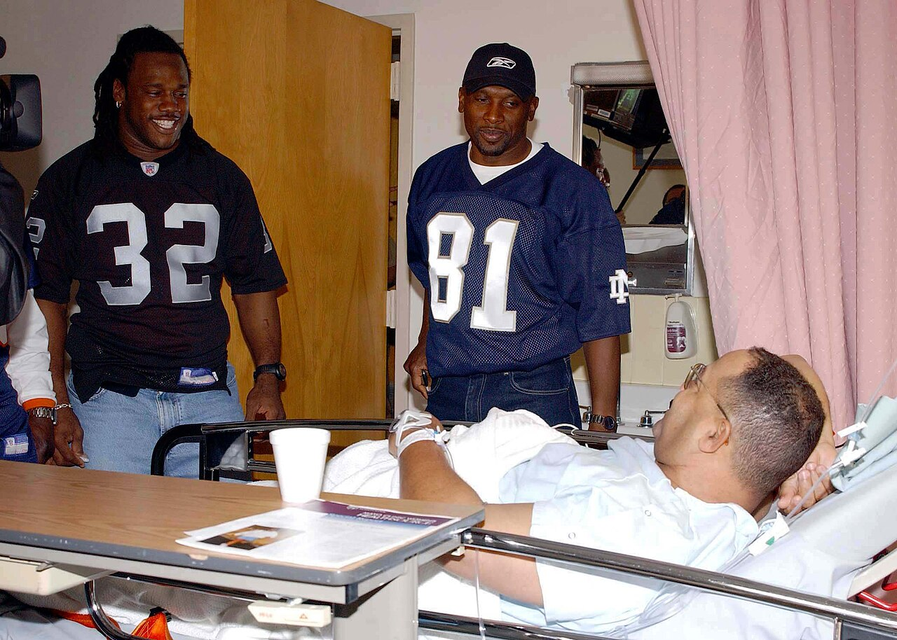

Tim Brown
The Heisman winner who scored on his first NFL touch, came north with the team in 1995, and left as the Raiders' leader in just about everything.
The Tim Brown Story
When the Raiders came home to Oakland in 1995, a lot of the names on the roster were new to the Coliseum crowd. Tim Brown wasn't. He was already the best player on the team, already a Pro Bowler, and for the next nine years he was the guy every kid in the East Bay wanted on the back of his jersey. Number 81. Mr. Raider.
He was born July 22, 1966, in Dallas, and went to Woodrow Wilson High, the same school that produced 1938 Heisman winner Davey O'Brien. His mother wouldn't let him play football as a freshman, so he played in the band. He joined the team as a sophomore and tried to hide it from her until the band director called the house asking where he'd been. Woodrow went 4 and 25 and 1 in his three years as a starter, and he still had his pick of the big college programs.
He chose Notre Dame and became Touchdown Timmy. He set a school record with 1,937 all purpose yards as a junior, and in 1987 he became the first wide receiver ever to win the Heisman Trophy. He left South Bend with 19 school records, including 5,024 all purpose yards.
The Los Angeles Raiders took him sixth overall in the 1988 draft, and the very first time he touched the ball in the NFL, against San Diego at the L.A. Coliseum, he returned a kickoff 97 yards for a touchdown. As a rookie he led the league in kickoff returns and return yards and set an NFL rookie record with 2,317 combined yards. He went to the Pro Bowl as a return man.
Then the opener of 1989 took it all away with a season ending injury. He came back in 1990 mostly as a punt returner and caught only 103 passes over the next three years combined. In 1993 he finally got the ball as a receiver and broke out with 80 catches for 1,180 yards, and that started a run nobody had seen before: nine straight 1,000 yard seasons from 1993 to 2001, and 10 straight years with at least 75 catches.
In March 1994 Denver signed him to an offer sheet as a free agent, and the Raiders matched it. A year later the franchise moved back to Oakland, and Brown came with it. In 1997 he caught 104 passes for 1,408 yards, tied for the league lead in catches, set a team record with seven 100 yard games, and became the Raiders' career receiving leader. He was named to the NFL's 1990s All Decade Team.
In 2001 the Raiders added Jerry Rice and suddenly Oakland had two of the best receivers in history on the same field. That December he returned a punt 88 yards for a touchdown against Kansas City at 35, the oldest player in league history to score on a punt return. In 2002 he passed Gene Upshaw for the most games ever played as a Raider, and the team went to Super Bowl XXXVII, the only championship game of his career.
It ended badly. The Raiders released him before the 2004 season because he didn't want a smaller role, and he signed with Jon Gruden in Tampa Bay. His relationship with Al Davis had always been complicated, and the exit made it worse. But in Week 3 that year, on a Sunday night at the Coliseum, he caught his 100th career touchdown pass against the Raiders and the Oakland crowd gave him a standing ovation.
He signed a one day contract in 2005 so he could retire as a Raider. He finished with 1,094 catches, 14,934 receiving yards and 100 receiving touchdowns, plus 3,320 punt return yards, and 105 total touchdowns. He was the only player ever to retire in the top five for both receiving yards and return yards.
The Hall of Fame made him wait. He was eligible in 2010 and was a finalist in 2012 and 2013 before finally getting the call in 2015. He was inducted in Canton on August 8, 2015, presented by his brother Donald Kelly, and he opened his speech by leading the Raider Nation in a RAIDERS chant.
What He Meant to Us
Walk around any Raiders crowd in the East Bay and count the 81 jerseys. There are a lot. For the nine years the team was back in Oakland with him, Tim Brown was the constant. Coaches changed, quarterbacks changed, and every Sunday he was out there moving the chains.
What gets lost is how complete he was. Everybody remembers the catches. Fewer people remember that he was still returning punts in his 30s and took one back 88 yards at 35. Tom Flores said it best: people forget how dangerous he was as a return man.
The way it ended still stings. Released, sent to Tampa, and then he comes back to the Coliseum in a Bucs uniform and scores his 100th touchdown against us. And the place stood up and cheered him. That tells you everything about what he meant here.
He should never have had to wait six years for Canton. But when he finally got there, the first thing he did was lead the whole place in a RAIDERS chant. Of course he did.
In Pictures

Why He Was Clutch
Brown's career started with a touchdown on his first touch and ended with a touchdown in front of the Oakland crowd that loved him. In between he was the one guy every defense had to plan for. As Fred Biletnikoff put it, for almost his entire career as a starter he was the one guy opponents had to worry about, and nobody ever really stopped him.
Look at the consistency. Ten straight seasons with at least 75 catches, an NFL record, nine straight 1,000 yard seasons, and 176 consecutive starts at receiver, another record. He was durable, he was smart, and when Rich Gannon arrived he found a receiver who learned the whole playbook on Wednesday morning and lined up everybody else.
And he did it all while returning punts. He had 3,272 punt return yards as a Raider, a team record, and he scored on a punt return at 35. Very few receivers who catch 1,000 passes are also back there fielding kicks. Tim Brown was.
Clutch Moments
- September 4, 1988
Ninety seven yards on his first touch
In the season opener against San Diego at the Los Angeles Memorial Coliseum, the Heisman winner fielded his first NFL kickoff and took it 97 yards for a touchdown. The Raiders won 24 to 13, and he went on to lead the league in kickoff return yards with 1,098 and set the NFL rookie record for combined yards.
- 1993 season
The breakout
After a lost 1989 and three years mostly as a returner, Brown finally got the ball as the No. 1 receiver and caught 80 passes for 1,180 yards and 7 touchdowns. In two playoff games that season he caught 8 passes for 213 yards and 2 touchdowns. It was the first of nine straight 1,000 yard seasons.
- 1997 season
104 catches in Oakland
Brown caught 104 passes for 1,408 yards, tied for the NFL lead in receptions and became the Raiders' career receiving leader. He had a team record seven 100 yard games and tied an NFL mark with five games of 150 or more receiving yards. He made the Pro Bowl and was named to The Sporting News All Pro team.
- December 9, 2001
The oldest punt return touchdown ever
At the Coliseum against Kansas City, Brown, 35, fielded a punt and went 88 yards for a touchdown, making him the oldest player in NFL history to score on a punt return. The Raiders won 28 to 26.
- September 26, 2004
Number 100, at the Coliseum
Playing for Tampa Bay on a Sunday night in Oakland, Brown caught his 100th career touchdown pass against the team he had played 16 years for. The Coliseum crowd gave him a standing ovation. The Raiders won 30 to 20, and it was the last touchdown of his career.
- August 8, 2015
RAIDERS in Canton
Brown walked to the podium at his Hall of Fame enshrinement, greeted the Hall of Famers on stage, and led a Canton crowd full of silver and black in a RAIDERS chant before he got into his speech.
The Highlights
What They Said About Brown
“If he’s not Hall of Fame material, then I don’t know what Hall of Fame material looks like.”
“Time after time Tim made the clutch catch or the key play.”
“Right now, they’re talking about him as a receiver, but people forget how dangerous and productive he was as a return man.”
“You have to start with the fact that he could always catch the ball, he was absolutely confident in his ability to catch the ball,”
“I can't wait to enjoy this for the rest of my life,”
“The very first time I touched the ball in the NFL I returned a kick 97 yards for a touchdown.”
Career Stats
| Year | Team | G | GS | Rec | Yds | Avg | TD |
|---|---|---|---|---|---|---|---|
| 1988 | RAI | 16 | 9 | 43 | 725 | 16.9 | 5 |
| 1989 | RAI | 1 | 1 | 1 | 8 | 8.0 | 0 |
| 1990 | RAI | 16 | 0 | 18 | 265 | 14.7 | 3 |
| 1991 | RAI | 16 | 1 | 36 | 554 | 15.4 | 5 |
| 1992 | RAI | 15 | 12 | 49 | 693 | 14.1 | 7 |
| 1993 | RAI | 16 | 16 | 80 | 1,180 | 14.8 | 7 |
| 1994 | RAI | 16 | 16 | 89 | 1,309 | 14.7 | 9 |
| 1995 | OAK | 16 | 16 | 89 | 1,342 | 15.1 | 10 |
| 1996 | OAK | 16 | 16 | 90 | 1,104 | 12.3 | 9 |
| 1997 | OAK | 16 | 16 | 104 | 1,408 | 13.5 | 5 |
| 1998 | OAK | 16 | 16 | 81 | 1,012 | 12.5 | 9 |
| 1999 | OAK | 16 | 16 | 90 | 1,344 | 14.9 | 6 |
| 2000 | OAK | 16 | 16 | 76 | 1,128 | 14.8 | 11 |
| 2001 | OAK | 16 | 16 | 91 | 1,165 | 12.8 | 9 |
| 2002 | OAK | 16 | 16 | 81 | 930 | 11.5 | 2 |
| 2003 | OAK | 16 | 15 | 52 | 567 | 10.9 | 2 |
| 2004 | TAM | 15 | 4 | 24 | 200 | 8.3 | 1 |
| Career | 255 | 202 | 1,094 | 14,934 | 13.7 | 100 |
Regular season. RAI is the Los Angeles Raiders (1988 to 1994); OAK is Oakland after the 1995 move. 1989 ended with an injury in the opener. With the Raiders alone: 240 games, 1,070 catches, 14,734 yards, 99 touchdown catches. He also ran for 190 yards and a touchdown, for 105 career touchdowns in all. Scroll the table sideways on a phone.
Postseason receiving
| Year | Team | G | GS | Rec | Yds | Avg | TD |
|---|---|---|---|---|---|---|---|
| 1990 | RAI | 2 | 0 | 5 | 59 | 11.8 | 0 |
| 1991 | RAI | 1 | 0 | 4 | 45 | 11.3 | 0 |
| 1993 | RAI | 2 | 2 | 8 | 213 | 26.6 | 2 |
| 2000 | OAK | 2 | 2 | 7 | 75 | 10.7 | 0 |
| 2001 | OAK | 2 | 2 | 8 | 55 | 6.9 | 1 |
| 2002 | OAK | 3 | 3 | 13 | 134 | 10.3 | 0 |
| Career | 12 | 9 | 45 | 581 | 12.9 | 3 |
Punt and kick returns
| Year | Team | PR | PR Yds | PR TD | KR | KR Yds | KR TD |
|---|---|---|---|---|---|---|---|
| 1988 | RAI | 49 | 444 | 0 | 41 | 1,098 | 1 |
| 1989 | RAI | 4 | 43 | 0 | 3 | 63 | 0 |
| 1990 | RAI | 34 | 295 | 0 | 0 | 0 | 0 |
| 1991 | RAI | 29 | 330 | 1 | 1 | 29 | 0 |
| 1992 | RAI | 37 | 383 | 0 | 2 | 14 | 0 |
| 1993 | RAI | 40 | 465 | 1 | 0 | 0 | 0 |
| 1994 | RAI | 40 | 487 | 0 | 0 | 0 | 0 |
| 1995 | OAK | 36 | 364 | 0 | 0 | 0 | 0 |
| 1996 | OAK | 32 | 272 | 0 | 1 | 24 | 0 |
| 1997 | OAK | 0 | 0 | 0 | 1 | 7 | 0 |
| 1998 | OAK | 3 | 23 | 0 | 0 | 0 | 0 |
| 2001 | OAK | 6 | 111 | 1 | 0 | 0 | 0 |
| 2002 | OAK | 10 | 55 | 0 | 0 | 0 | 0 |
| 2004 | TAM | 6 | 48 | 0 | 0 | 0 | 0 |
| Career | 326 | 3,320 | 3 | 49 | 1,235 | 1 |
Tim Brown: Fast Facts
What years was Tim Brown with the Oakland and Los Angeles Raiders?
Tim Brown was with the Oakland and Los Angeles Raiders from 1988 to 2003 as a wide receiver.
What number did Tim Brown wear?
Tim Brown wore number 81.
What are Tim Brown's signature numbers?
14,734 receiving yards as a Raider, a franchise record; 1,070 catches as a Raider, a franchise record; 9 pro Bowl selections; 240 games played as a Raider, a franchise record.
What were Tim Brown's biggest honors?
9x Pro Bowl (1988, 1991, 1993 to 1997, 1999, 2001); 2x first team All Pro (1988, 1997); NFL 1990s All Decade Team; NFL receptions co leader (1997), kickoff return yards leader (1988), punt return yards leader (1994); Heisman Trophy (1987).
What are some of Brown's biggest moments?
Ninety seven yards on his first touch (September 4, 1988); The breakout (1993 season); 104 catches in Oakland (1997 season). Every one is in the Clutch Moments section above.